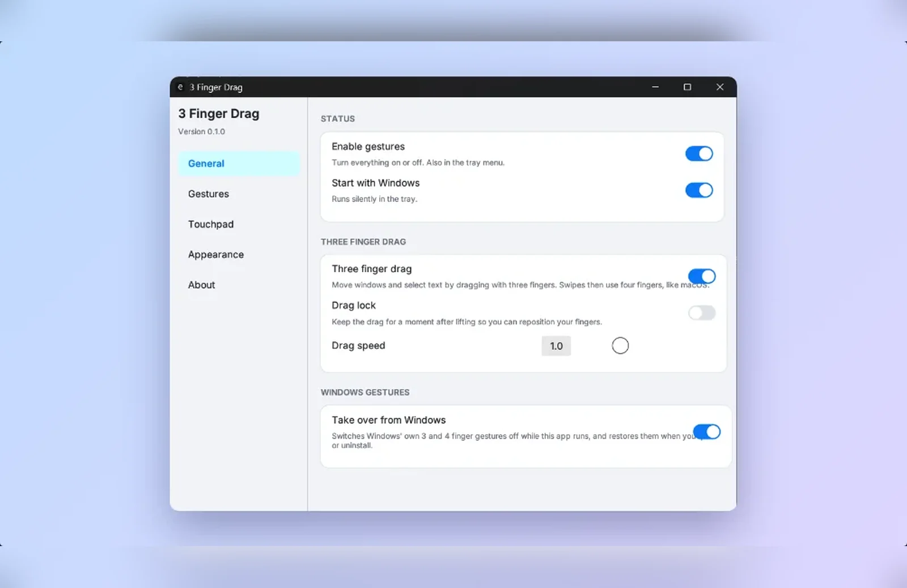
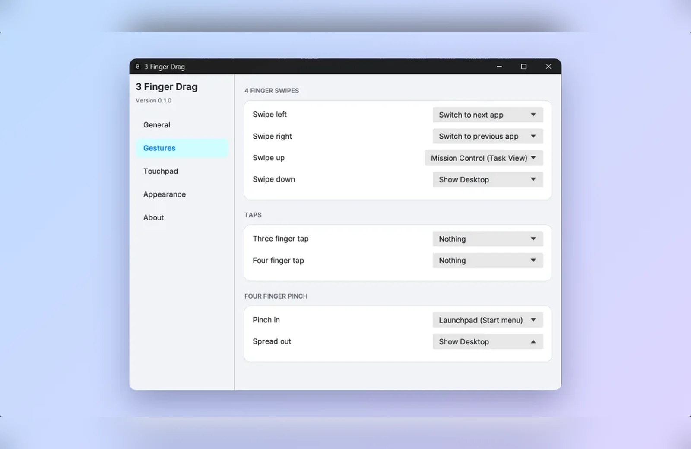
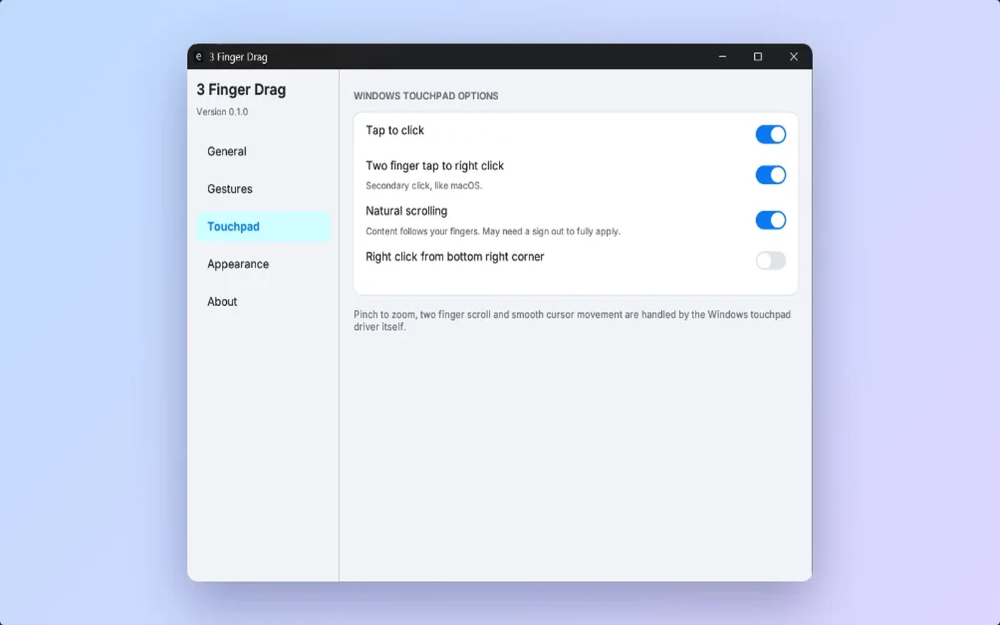
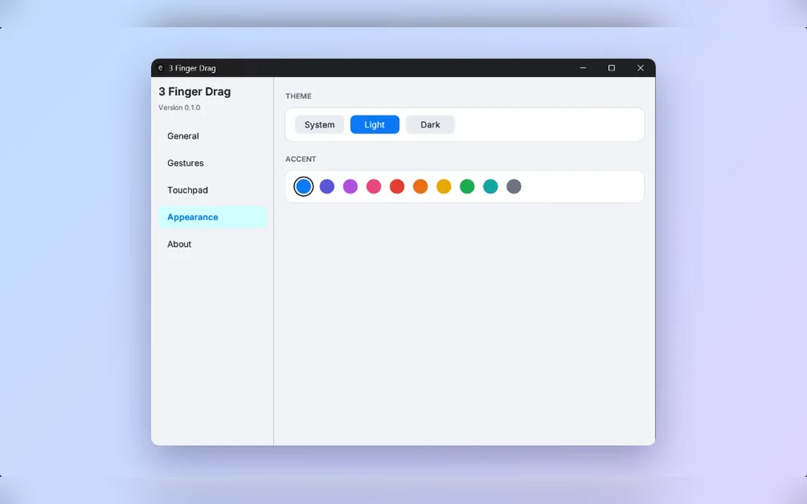
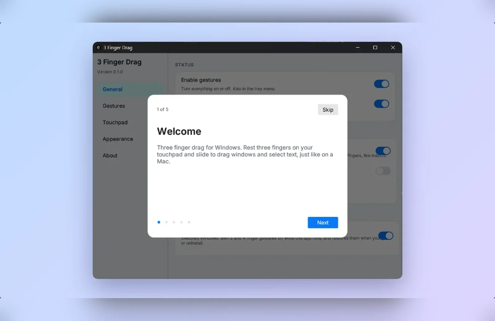
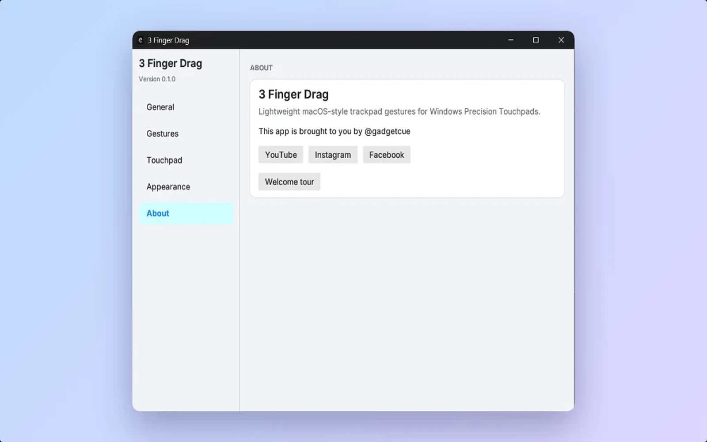

Rest three fingers on your touchpad to move windows and select text, like on a Mac. Map every swipe, tap and pinch to the action you want. It lives in the tray and installs with no admin rights.
Windows 10 and 11 with a Precision Touchpad · Installs for your user, no admin rights

Turn three finger drag on and set drag lock. Lift your fingers and keep dragging.

Choose what every swipe, tap and pinch does. Task View, Show Desktop, app switching and more.

Tap to click, two finger right click and natural scrolling. All in one place.

Light, dark or follow Windows. Nine accent colours.

A short welcome tour shows you the gestures. No manual needed.

Small, written in Rust, and quiet in the tray. Starts silently with Windows.
Mac-style gestures for your Windows touchpad.
Like a Mac.
Rest three fingers on the touchpad and slide. Windows move and text gets selected. Lift your fingers to drop.
Map any action.
Four finger swipes switch apps, open Task View or show the desktop. Taps and pinch can be set as well.
No digging through Windows.
Switch on tap to click, two finger right click, natural scrolling and corner right click without opening Windows Settings.
Make it yours.
Follow Windows or choose light or dark, then pick one of nine accent colours. A short welcome tour helps you get started.
It lives in the system tray and stays out of the way.
Match Windows, or choose your own.
Download, install and you are done.
ThreeFingerDrag-Setup.exe and double-click it. It installs itself for your account only.Release notes for 3 Finger Drag.
A visual refresh of the settings window plus sharper rendering on high-DPI screens.
LICENSES-third-party.txt). Apple's SF Symbols are not used for licence reasons.(The repository is private, so these image links only render for signed-in collaborators.)
First public release.
No. The setup installs for your account, adds a tray icon, a Start menu entry, autostart and an Add/Remove Programs entry.
A Windows 10 or 11 laptop with a Precision Touchpad.
While it runs, it switches off Windows own 3 and 4 finger gestures. They are restored when you quit or uninstall.
The installer is not code-signed yet. Click More info, then Run anyway.